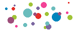
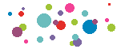

Nextoome c'est quoi ?

Nextoome est une plateforme qui facilite les échanges avec les commerçants de proximité pour des achats de produits alimentaires pouvant être retirés ou livrés en dehors des heures d’ouverture !

Nextoome est une plateforme qui facilite les échanges avec les commerçants de proximité pour des achats de produits alimentaires pouvant être retirés ou livrés en dehors des heures d’ouverture !
